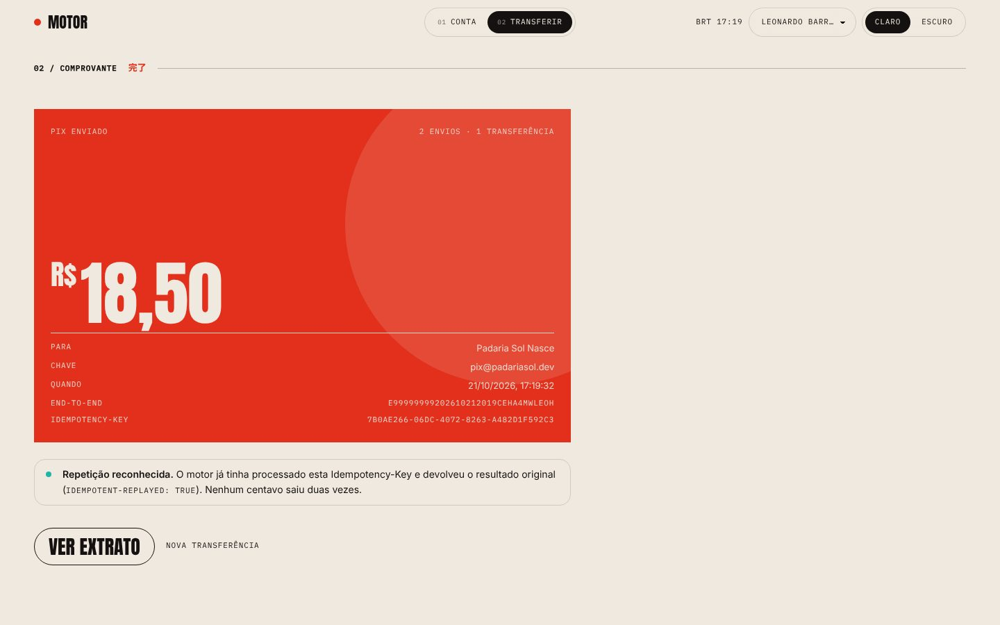
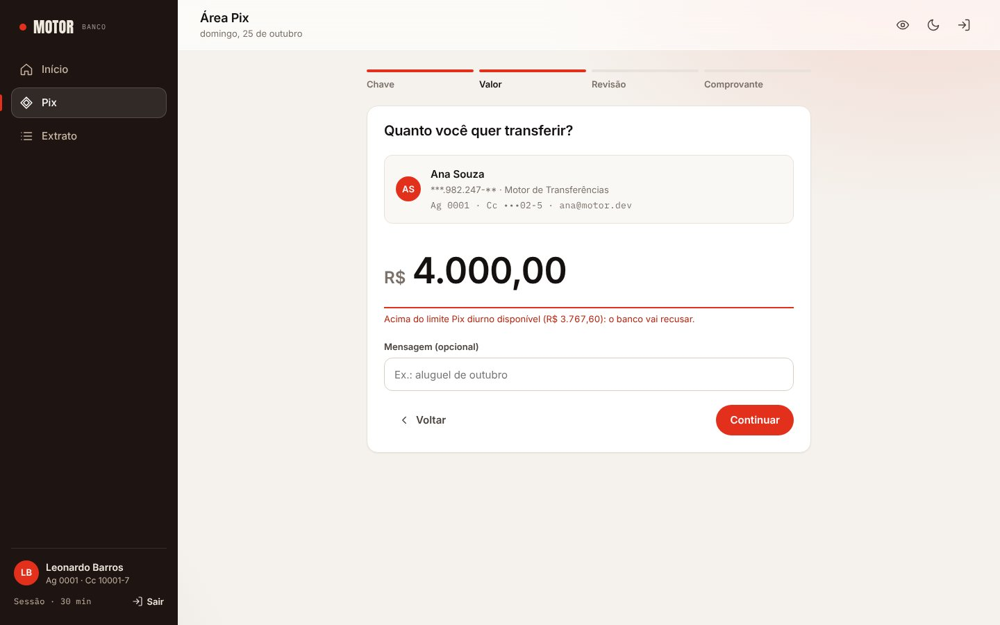
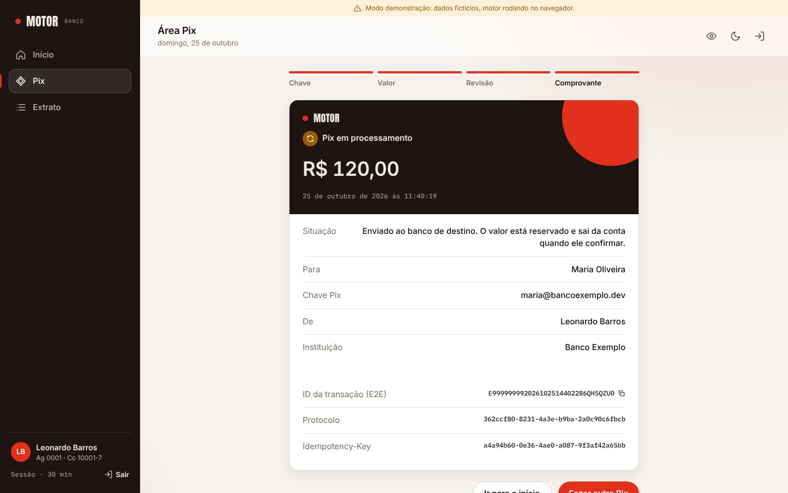
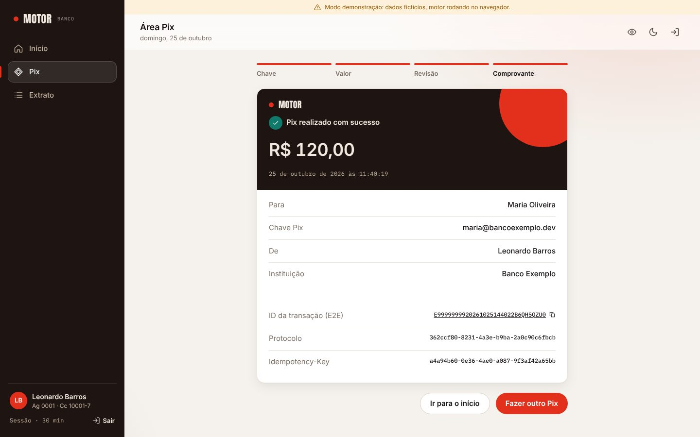

O que decidi, por que decidi, e onde ainda tenho dúvidas.
Core bancário e Pix em Java 21: transferências ACID, idempotentes e autenticadas, com um segundo serviço orientado a eventos em Kafka e Apache Camel. Documento preparado para revisão de arquitetura.
Este documento resume o Motor de Transferências, um projeto de estudo que construí para praticar, de ponta a ponta, o que uma vaga de desenvolvedor Java em banco ou fintech costuma exigir: transação e concorrência de verdade, idempotência, segurança, mensageria e testes que provam as garantias.
Ele não é um produto e não movimenta dinheiro real. Nomes, CPFs, chaves Pix e o ISPB
99999999 são fictícios; as regras de Pix seguem a documentação pública do Banco Central.
Escrevi aqui o que decidi, por que decidi, como implementei, os problemas que encontrei no caminho e, principalmente, os pontos em que não tenho certeza de ter feito a escolha certa. Prefiro que você ache os furos agora do que um entrevistador depois.
Leonardo Barros
P01…P17) para você responder por mensagem,
e um espaço em branco se preferir anotar no papel.Em produção, quatro coisas tornam isso difícil. O projeto foi construído em torno delas, e cada uma tem pelo menos um teste contra PostgreSQL real que prova a garantia.
Duas transferências leem o mesmo saldo e as duas debitam sobre o valor antigo: um débito some (lost update). Travando errado, as transações se esperam para sempre (deadlock).
O servidor debita, a rede cai antes da resposta, o app reenvia: a pessoa paga duas vezes. O cliente não tem como saber se o primeiro envio chegou.
Se a conta de origem vem do corpo da requisição, basta trocar um id para debitar outra pessoa (IDOR, o item 1 do OWASP API Top 10).
"O saldo é X" não basta: é preciso provar como se chegou a X, lançamento por lançamento, sem nunca editar o passado.
EVENTOS.mdddl-auto: validate)Débito, crédito, lançamentos e o evento da transferência acontecem numa única transação ACID no
motor-transferencias. Tudo o que reage a uma transferência (notificar, falar com o SPI, conciliar)
mora no motor-integracoes, ligado ao núcleo apenas pelo Kafka. Se ele cair, nenhum Pix interno deixa de ser concluído.
acks=all); o motor-integracoes consome, deduplica e responde.
A resposta do SPI volta ao motor por pix.spi.results.| Pacote | Responsabilidade |
|---|---|
auth | login, emissão do JWT, @CurrentAccount |
account | conta, saldo, extrato, contatos (/me) |
pix | dono de uma chave; DICT simulado |
transfer | idempotência, transação, locks, limites, devolução, saga |
ledger | lançamentos de partidas dobradas |
outbox | evento na transação e relay para o Kafka |
ratelimit | token bucket no login e na consulta de chave |
shared · config | Money, Problem Details, Security, CORS, Clock |
account_id.TransferService procura a Idempotency-Key daquela conta. Já existe? Devolve o resultado gravado.TransferProcessor resolve o destino pela chave Pix devolvendo só o id, e trava as duas contas, menor UUID primeiro.saveAndFlush), move os saldos, grava débito, crédito e o evento do outbox. Commit.201 Created com Location. O relay publica o evento em até 1 s.As seis primeiras têm ADR no repositório (docs/adr). Para cada uma: o que decidi, por que,
as alternativas que considerei, um trecho do código, o teste que prova a garantia e a dúvida que ficou.
| # | Decisão | Problema que resolve | Registro |
|---|---|---|---|
| D1 | Lock pessimista nas duas contas, em ordem consistente | lost update e deadlock | ADR 0001 |
| D2 | Idempotência pela chave do cliente, gravada na própria transferência | pagar duas vezes após retry | ADR 0002 |
| D3 | JWT e conta de origem sempre vinda do token | IDOR, enumeração de usuários | ADR 0003 |
| D4 | Outbox transacional, Kafka e Apache Camel | dupla escrita banco + broker | ADR 0004 |
| D5 | Limite por período e devolução como transferência nova | regra do BCB sob concorrência; auditoria | ADR 0005 |
| D6 | Pix para outro banco como saga, com reserva de saldo | decisão que não é nossa, e chega depois | ADR 0006 |
| D7 | Livro-razão de partidas dobradas e constraints como última defesa | provar o saldo; bug que passa do domínio | V1 · código |
| D8 | Observabilidade: métricas de negócio e traceparent no outbox | trace que se perde entre threads e serviços | V6 · código |
BigDecimal com escala 2, validado num tipo Money; no front, centavos inteiros (nada de float).code estável (TRANSFER_REJECTED, ACCOUNT_BUSY…) para o cliente não depender do texto.ddl-auto: validate: o schema é versionado em SQL; o Hibernate só confere.Clock injetável: os testes de limite param o relógio às 20h30 em vez de esperar a noite.spring.threads.virtual.enabled), com pool Hikari pequeno e explícito por causa do plano gratuito.OUTBOX_RELAY_ENABLED=false): a API sobe sem Kafka e os eventos esperam no outbox.VITE_API_URL, um motor em memória no navegador aplica as mesmas regras.READ COMMITTED (padrão do Postgres) com SELECT … FOR UPDATE na conta pagadora e na recebedora,
sempre o menor UUID primeiro, comparado sem sinal, igual ao Postgres.
Serializa só quem disputa a mesma conta: transferências entre contas diferentes correm em paralelo. A regra de negócio (bloqueio, saldo, limite) continua no domínio Java, e não espalhada em SQL.
Com ordem fixa, A→B e B→A pedem primeiro a mesma conta: uma espera a outra, em vez de cada uma segurar uma conta e esperar a outra para sempre.
SERIALIZABLE | correto sem pensar em locks, mas aborta sob disputa e obriga o cliente a repetir |
| Lock otimista | numa conta muito movimentada, quase toda tentativa falha e é repetida |
UPDATE … WHERE balance >= x | atômico, mas a regra vai para o SQL e o livro-razão precisa do saldo resultante |
@Version na conta: se um caminho futuro esquecer o lock, a escrita falha em vez de sobrescrever.lock_timeout = 5s: estoura como 409 ACCOUNT_BUSY com Retry-After; repetir com a mesma chave é seguro.CHECK (balance >= 0) no banco, se tudo acima falhar./** * Comparação sem sinal, igual à do Postgres. * UUID.compareTo compara com sinal (ffffffff-… * vem antes de 00000000-…), o que divergiria de * qualquer ORDER BY id FOR UPDATE feito em SQL. */ static int lockOrder(UUID a, UUID b) { int high = Long.compareUnsigned( a.getMostSignificantBits(), b.getMostSignificantBits()); return high != 0 ? high : Long.compareUnsigned( a.getLeastSignificantBits(), b.getLeastSignificantBits()); } private LockedAccounts lock(UUID payerId, UUID payeeId) { boolean payerFirst = lockOrder(payerId, payeeId) < 0; UUID firstId = payerFirst ? payerId : payeeId; UUID secondId = payerFirst ? payeeId : payerId; Account first = accounts.findByIdForUpdate(firstId)…; Account second = accounts.findByIdForUpdate(secondId)…; return payerFirst ? new LockedAccounts(first, second) : new LockedAccounts(second, first); }
ordersLikePostgresNotLikeUuidCompareTo trava a decisão da comparação sem sinal.lock_timeout de 5 s não vira o gargalo real antes do lock?Todo POST /transfers (e toda devolução) exige o header Idempotency-Key, um UUID gerado pelo
cliente por intenção de transferir, não por requisição HTTP. A chave e o SHA-256 do pedido
normalizado são gravados na linha da transferência, na mesma transação que move o saldo.
| Situação | Resposta |
|---|---|
| Chave nova | processa: 201 ou 422 TRANSFER_REJECTED |
| Mesma chave, mesmo pedido | resultado gravado + Idempotent-Replayed: true, sem novo débito |
| Mesma chave, pedido diferente | 422 IDEMPOTENCY_KEY_REUSED |
| Duas ao mesmo tempo | uma grava; a outra bate na UNIQUE, faz rollback inteiro e devolve a vencedora |
| Recusada por saldo; depois a conta recebe | continua recusada: a decisão foi tomada uma vez |
TransferService não é transacional, de propósito: a perdedora da corrida só consegue ler o que a vencedora gravou depois que a própria transação foi desfeita.saveAndFlush antes de mexer nos saldos: a violação de unicidade aparece antes de qualquer débito ser enviado ao banco."100" e "100.00" são o mesmo pedido.private TransferResult idempotent(UUID owner, UUID key, String requestHash, Supplier<Transfer> operation) { var existing = transfers .findBySourceAccountIdAndIdempotencyKey(owner, key); if (existing.isPresent()) { return replay(existing.get(), key, requestHash); } try { TransferView processed = toView(operation.get()); return new TransferResult(processed, false); } catch (DataIntegrityViolationException race) { // Outra requisição com a mesma chave fez commit // primeiro; esta foi desfeita inteira pelo rollback. // Responde com o que a vencedora gravou. return transfers .findBySourceAccountIdAndIdempotencyKey(owner, key) .map(w -> replay(w, key, requestHash)) .orElseThrow(() -> race); } }

sameIdempotencyKeyFiredConcurrentlyMovesMoneyOnce: 20 requisições com a mesma chave ao mesmo tempo,
uma transferência e um débito. Mesma chave em contas diferentes: dois Pix independentes.DataIntegrityViolationException é tratada como corrida. E as chaves nunca expiram:
como fazer expiração sem abrir uma janela para pagar duas vezes?A primeira versão recebia sourceAccountId no corpo do POST /transfers. Trocar o id
bastava para debitar outra pessoa. O mesmo valia para saldo, extrato e comprovante.
sub, account_id e iss, emitido pelo JwtEncoder do Spring Security, sem biblioteca extra.@CurrentAccount UUID, resolvido por um HandlerMethodArgumentResolver. Rotas de conta viraram /me/**.| Sessão com cookie | estado no servidor e CSRF; menos natural com front separado na Vercel |
| Keycloak / Spring Authorization Server | o certo em produção, mas infraestrutura demais para um simulador; trocar o emissor vira configuração |
| RS256 | "com um único serviço, HS256 basta" (veja a dúvida ao lado) |
| Refresh token | aumenta a superfície; token curto + novo login atende a demo |
@PostMapping ResponseEntity<?> create( @RequestHeader(Headers.IDEMPOTENCY_KEY) UUID idempotencyKey, @Valid @RequestBody TransferRequest request, @CurrentAccount UUID accountId) { // do token // o DTO não tem sourceAccountId: a origem // só pode vir do claim account_id return respond(service.execute(idempotencyKey, request.toCommand(accountId))); } // respond(): COMPLETED → 201 (ou 200 no replay), // PENDING → 202, REJECTED → 422
account_id trocado no payload: 401 (assinatura não confere). Recebedor vê o
comprovante; terceiro recebe 404. 11ª tentativa de login: 429. TransferControllerTest garante que um
sourceAccountId forjado no corpo é ignorado.motor-integracoes valida
o mesmo token com o mesmo segredo, então tecnicamente também poderia emitir tokens. Minha
justificativa envelheceu. Vou para RS256 + JWKS, ou já para um Authorization Server?Publicar no Kafka dentro do método da transferência tem duas falhas possíveis: publicar e a transação dar rollback (evento de algo que não aconteceu), ou commitar e o Kafka estar fora (transferência sem evento).
Propagation.MANDATORY).FOR UPDATE SKIP LOCKED, publica com acks=all e produtor idempotente, e só marca o que o broker confirmou.eventId no próprio Postgres (INSERT … ON CONFLICT DO NOTHING).pix.transfers.dlq).| XA / 2PC | lento, frágil e mal suportado pelo Kafka |
| Debezium (CDC) | o passo natural seguinte; exige Kafka Connect, infraestrutura demais para a demo |
@KafkaListener puro | funciona; Camel foi escolhido pelo roteamento, tradução, agregação e DLQ |
| Serviço por conta | perderia a transação ACID e exigiria saga para todo Pix |
@Scheduled(fixedDelayString = "${motor.outbox.relay.interval:1s}") @Transactional public int publishPending() { List<OutboxEvent> batch = outbox.lockNextBatch(properties.batchSize()); // SKIP LOCKED for (OutboxEvent event : batch) { var record = new ProducerRecord<>(topic, event.getPartitionKey(), event.getPayload()); record.headers().add("eventId", …); record.headers().add("traceparent", …); try { // espera o ack: só marca o que o Kafka confirmou kafka.send(record).get(10, TimeUnit.SECONDS); } catch (Exception e) { // rollback devolve o lote inteiro para a fila throw new IllegalStateException(…, e); } event.markPublished(clock.instant()); } return batch.size(); }
OutboxRelayIT (Postgres + Kafka reais): concluído e recusado publicados com a chave certa; transferência que
falha não deixa evento. KafkaPontaAPontaIT: o serviço de integrações inteiro contra Kafka real.
RotasPixTest: deduplicação, agregação e DLQ.PixLimits.windowAt, testada nas bordas.kind = REFUND, E2E começando com D), no sentido contrário, com o próprio par de lançamentos. O livro-razão nunca é editado.motor-integracoes, vira pacs.004 com o motivo ISO (MD06, FR01, BE08).| Contador de "usado" na conta | precisa ser zerado na virada da janela; a soma por índice é exata e não tem estado para dessincronizar |
Estorno com UPDATE no original | apaga a história; auditoria precisa ver o débito e a volta como fatos separados |
static Window windowAt(Instant now) { ZonedDateTime local = now.atZone(BRASILIA); LocalDate today = local.toLocalDate(); LocalTime time = local.toLocalTime(); if (!time.isBefore(DAY_STARTS) && time.isBefore(NIGHT_STARTS)) { return new Window(DAYTIME, at(today, DAY_STARTS), at(today, NIGHT_STARTS)); } // às 02h, a noite começou às 20h de ONTEM LocalDate started = time.isBefore(DAY_STARTS) ? today.minusDays(1) : today; return new Window(NIGHTTIME, at(started, NIGHT_STARTS), at(started.plusDays(1), DAY_STARTS)); }

LIMIT_EXCEEDED,
nunca 7. Oito devoluções simultâneas de R$ 30 sobre um Pix de R$ 100: exatamente 3.Eu gerava pacs.008 para todo Pix, inclusive entre clientes do mesmo banco. Estava errado no domínio: Pix "on-us" não passa pelo SPI. Só vai ao SPI o Pix cujo recebedor está em outra instituição, e aí a decisão final é do SPI e do banco recebedor, depois.
PENDING sem lançamento. O valor fica reservado:
disponível = saldo − Pix pendentes. Responde 202 Accepted.TransferSubmitted vai pelo outbox; o Camel gera a pacs.008 e o SPI simulado responde em pix.spi.results.COMPLETED.REJECTED com o código ISO (ex.: AC03). A compensação é só liberar a reserva: o dinheiro nunca saiu.PENDING, é repetida ou atrasada e é ignorada.| Debitar na hora e estornar | o que muitos bancos fazem; mas a recusa vira dois lançamentos a mais e o extrato mostra um vai-e-volta |
| Chamada síncrona ao SPI | segura conexão e trava de linha esperando outro sistema |
| 2PC entre serviços | acopla serviços e broker numa transação distribuída |
| pacs.002 em XML no motor | o motor teria que entender ISO 20022; quem traduz é o Camel |


PENDING e o valor reservado para sempre.
E a conta de liquidação é uma conta quente: todo Pix externo a trava.Cada transferência concluída gera exatamente um débito e um crédito, cada um com o
balance_after da conta. O saldo é uma coluna (rápida de ler), mas sempre explicável pela soma dos
lançamentos: um teste de integração confere que o livro-razão explica cada saldo depois da rajada concorrente.
As constraints do V1 são a última linha: CHECK (balance >= 0), CHECK (amount > 0),
contas distintas, estado coerente com motivo de recusa, e UNIQUE (transfer_id, type) para que uma
transferência nunca tenha dois débitos. Recusas e Pix pendentes não geram lançamentos: o livro-razão
só registra o que de fato se moveu.
private void settle(Transfer t, Account from, Account to, Instant now, String originalE2e) { from.debit(t.getAmount(), now); to.credit(t.getAmount(), now); ledger.saveAll(List.of( LedgerEntry.debit(from, to.getId(), t.getId(), …), LedgerEntry.credit(to, from.getId(), t.getId(), …))); // commit grava os dois, rollback desfaz os dois events.record(t, from, to, now, originalE2e); }
| O quê | Como |
|---|---|
| Negócio | pix_transferencias_total{tipo,status,motivo}, replays de idempotência, espera de lock (p50/p95/p99) |
| Saúde do outbox | outbox_pendentes e outbox_atraso_seconds: crescendo, o Kafka está fora ou o relay parou |
| Tracing | traceId em toda linha de log; exportação OTLP configurável |
O detalhe que deu trabalho: o relay publica depois, em outra thread, quando o contexto da
requisição já se perdeu. A solução foi gravar o traceparent W3C na linha do outbox, na mesma
transação do Pix (migração V6). O relay o envia como header do Kafka e o Camel o repassa nas notificações:
um mesmo traceId liga o app, a API, o Kafka e o Camel.
ApiSecurityIT confere o traceparent no outbox e as métricas no /actuator/prometheus;
OutboxRelayIT confere que o header publicado tem o traceId do span da requisição.A regra que segui: toda garantia de concorrência ou de consistência é provada contra PostgreSQL e Kafka reais (Testcontainers). Mock serve para regra de decisão, não para provar lock.
@WebMvcTest + Spring Security: status HTTP, Problem Details, sourceAccountId forjado ignorado.| Suíte | Tipo | O que prova |
|---|---|---|
| TransferConcurrencyIT (5) | IT · Postgres | 50 débitos com saldo para 30 → 30; 60 cruzadas sem deadlock; mesma chave 20× → um débito; livro-razão explica cada saldo |
| LimitsAndRefundsIT (5) | IT · Postgres | 10 Pix contra o limite noturno → exatamente 6; 8 devoluções simultâneas → exatamente 3 |
| ExternalPixIT (5) | IT · Postgres | reserva não pode ser gasta; ACSC liquida; RJCT libera; resposta repetida ignorada |
| OutboxRelayIT (4) | IT · Postgres + Kafka | saga inteira pelo Kafka; chave por conta; traceparent; falha não deixa evento |
| ApiSecurityIT (6) | IT · HTTP + Postgres | jornada com login; token adulterado → 401; terceiro → 404; 11º login → 429; métricas |
| TransferProcessorTest (11) | unit · Mockito | ordem de lock nos dois sentidos; recusas sem mexer em saldo; transferência gravada antes dos saldos |
| TransferControllerTest (12) | slice | 201/200/422/409/400/401 e a conta sempre vinda do token |
| RotasPixTest (10) | Camel + Postgres | on-us não vai ao SPI; pacs.008 com ISPB; RJCT AC03; dedup; Aggregator; DLQ e a mensagem seguinte passa |
| KafkaPontaAPontaIT (2) | IT · Kafka + Postgres | o serviço de integrações inteiro: evento → resposta do SPI; Pix → notificações com a chave certa |
| Front · Vitest (12) | unit | dinheiro em centavos inteiros; janela de limite em Brasília; saga no modo demonstração |
backend.yml, integracoes.yml,
frontend.yml, com deploy só depois dos testes), mas hoje rodo as suítes localmente, e os
últimos commits levam [skip ci]. Os selos de CI saíram do README para não mostrar um estado falso.Os erros que mais me ensinaram. Vários só apareceram quando troquei mock por infraestrutura real.
sourceAccountId no corpo para debitar outra conta.@CurrentAccount, rotas /me/**, 404 em comprovante de terceiro (ADR 0003).UUID.compareTo compara com sinal; o Postgres, nãoffffffff-… vinha antes de 00000000-… no Java e depois no Postgres: a ordem de lock divergiria de qualquer ORDER BY id FOR UPDATE em SQL.Long.compareUnsigned e um teste que trava a decisão.FOR UPDATE a deixava no contexto de persistência; o SELECT … FOR UPDATE seguinte devolvia a mesma instância, com saldo lido sem trava.id; carregar a entidade apenas no lock.UNIQUE (idempotency_key) no sistema todo, a chave de um cliente colidia com a de outro e revelava que aquele UUID já tinha sido usado.UNIQUE (source_account_id, idempotency_key); busca e corrida passam a considerar a conta.motor-integracoes gerava pacs.008 até para Pix entre clientes do mesmo banco.CamelKafkaKey; eu usava kafka.KEY (Camel 3). O produtor ignorava em silêncio. Só o teste de ponta a ponta com Kafka real achou.kafka-init), criação automática desligada no broker, metadata.max.age.ms em 30 s.traceparent gravado na linha do outbox, na mesma transação (V6).prepareThreshold=0; relay desligável e outbox acumulando; testes locais..bean(Classe.class) criava outra instância, fora do Spring; passei a injetar os beans pelo construtor da rota.forward-headers-strategy: native resolveu.Reli o projeto procurando o que um revisor sênior apontaria. Separei o que é fato (está no código) do que é suspeita (acho que acontece, mas ainda não escrevi o teste que prova).
| Severidade | Ponto | O que acontece | Status | Ver |
|---|---|---|---|---|
| Alta | Pix externo pode ficar PENDING para sempre |
Não há timeout nem consulta de status. Se a resposta do SPI se perder (crash do motor-integracoes entre consumir e responder; a resposta é atrasada com asyncDelayed), o valor fica reservado indefinidamente. | fato + suspeita | P07 |
| Alta | Relay com I/O de rede dentro da transação | O lote é travado com FOR UPDATE e cada evento espera o ack (até 10 s) dentro da mesma transação: com o Kafka lento, conexões do pool ficam presas. Uma falha no meio do lote republica os anteriores (aceito pela garantia at-least-once). | fato | P06 |
| Média | Ordem por conta com duas instâncias do relay | Com SKIP LOCKED, a instância 2 pode pegar eventos mais novos da mesma conta enquanto a 1 ainda publica os mais antigos. A chave por conta garante ordem na partição, mas não a ordem de chegada ao produtor. | suspeita | P06 |
| Média | Consumidor do motor sem DLT explícita | SpiResultListener usa o tratamento de erro padrão do Spring Kafka. Uma resposta com E2E divergente lança exceção, é retentada e depois descartada com log, sem ir a um tópico de erro. | fato | P08 |
| Média | DLQ + Idempotent Consumer | O eventId é gravado antes do processamento. Se o Dead Letter Channel considera a mensagem "tratada", a chave pode ficar gravada, e reprocessar da DLQ com o mesmo eventId seria descartado como duplicado. | suspeita | P08 |
| Média | HS256 compartilhado entre dois serviços | O motor-integracoes conhece o segredo que assina os tokens; um comprometimento ali permite emitir tokens válidos para o motor. | fato | P11 |
| Média | CPF em claro nos eventos | O evento leva taxId completo de pagador e recebedor. A API mascara; o Kafka, não. Retenção do tópico e minimização (LGPD) não foram pensadas. | fato | P10 |
| Média | Conta de liquidação quente | Todo Pix externo liquidado trava a mesma linha. O ADR registra; a solução (subcontas, saldo derivado) não existe. | fato | P02 |
| Média | TransferProcessor concentra demais |
Pix interno, Pix externo, devolução e resposta do SPI na mesma classe (≈ 250 linhas). Lê bem hoje; o próximo fluxo (Pix recebido de fora) vai pesar. | opinião | P15 |
| Baixa | Conciliação em memória | O Aggregator do Camel guarda o lote em memória até fechar (50 itens ou 30 s): um restart perde o lote em andamento. | suspeita | P08 |
| Baixa | Outbox e chaves que nunca expiram | Linhas publicadas do outbox e chaves de idempotência crescem sem limpeza. | fato | P05 |
| Baixa | Consultas extras no comprovante | toView busca as duas contas e a soma devolvida em consultas separadas (N+1 pequeno, sem impacto hoje). | fato | — |
| Baixa | Rate limit por instância | O token bucket vive na memória: com duas instâncias, o limite efetivo dobra. | fato | P12 |
| Baixa | Fronteiras do monólito modular | Os pacotes são por domínio, mas nada impede transfer de usar o repositório de account diretamente (e ele usa). | fato | P13 |
Não preciso da resposta pronta. Preciso saber como você pensaria.
Agrupei por tema e, em cada uma, escrevi minha hipótese atual para você corrigir em vez de começar do zero. Se só houver tempo para algumas, as que mais me importam estão marcadas com ●.
Concorrência e transações
Idempotência
Mensageria e saga
Segurança
Código, arquitetura e testes
Carreira e apresentação
Escolhi SELECT … FOR UPDATE para manter a regra no domínio. Muita gente defende
UPDATE accounts SET balance = balance - :x WHERE id = :id AND balance >= :x RETURNING balance.
Minha hipótese: o pessimista é mais legível e suficiente até um volume médio; o atômico vence em contas quentes. Quero saber: em que ponto você trocaria, e se misturar os dois no mesmo sistema é aceitável.
Todo Pix externo trava a mesma linha. Pensei em subcontas escolhidas por hash, ou em não atualizar o saldo dela na hora e derivá-lo do livro-razão.
Quero saber: qual dessas é comum em core bancário, ou se existe um padrão melhor (lançamento assíncrono em lote, por exemplo).
lock_timeout de 5 s: está bem dimensionado?Com virtual threads, o gargalo real passa a ser o Hikari. Uma transferência esperando lock segura uma conexão por até 5 s, e a 11ª requisição espera a conexão (até 5 s) antes de esperar o lock.
Quero saber: como você dimensiona isso, se 409 ACCOUNT_BUSY com Retry-After é boa experiência ou se o certo seria enfileirar, e se um semáforo por conta antes do banco faz sentido.
O limite é SUM(amount) desde o início da janela, com índice (source_account_id, created_at), lido com a conta travada. Descartei um contador por medo de dessincronizar na virada da janela.
Quero saber: para uma conta com milhares de Pix por janela, você materializaria (contador por janela com chave (conta, início_da_janela), por exemplo)? Como garantir que ele não divirja?
Gravei a chave na linha da transferência para não existir "chave reservada, transferência não feita". O modelo do Stripe usa uma tabela própria com a resposta serializada, que serve para qualquer endpoint.
Quero saber: qual você prefere num banco; como expirar chaves sem abrir uma janela para pagar duas vezes; se é certo não gravar erros 400/404; e se tratar qualquer DataIntegrityViolationException como corrida é perigoso.
Hoje: lote com FOR UPDATE SKIP LOCKED, envio síncrono evento a evento dentro da transação, ack de até 10 s. Vejo três problemas: conexão presa durante I/O de rede, throughput baixo, e ordem por conta incerta com duas instâncias.
Ideias que tenho: enviar o lote assíncrono e esperar todos os acks; marcar em transação curta separada; uma instância ativa por vez (eleição de líder ou advisory lock); ou particionar o relay por hash da conta. Quero saber: o que você faria e quando o Debezium passa a compensar.
PENDING?A saga é coreografada: ninguém é "dono" do prazo. Se a resposta se perder, o valor fica reservado para sempre.
Minha hipótese: um job que, depois de N segundos, consulta o status no SPI (no Pix real existe mensagem de consulta) e, sem resposta, alerta a operação; nunca recusar sozinho, porque o dinheiro pode ter sido liquidado do outro lado. Quero saber: se faz sentido migrar para orquestração (uma máquina de estados explícita), e onde ela moraria: no motor ou nas integrações.
No motor, o SpiResultListener usa o error handler padrão do Spring Kafka (sem tópico de erro). No Camel, a DLQ guarda a mensagem original, mas suspeito que o eventId fique gravado como processado e o reprocessamento seja descartado. A conciliação vive em memória até fechar o lote.
Quero saber: como você padroniza isso num time (retry com backoff, DLT por consumidor, ferramenta de replay), e como testar esses caminhos de falha sem um teste frágil.
Escolhi Camel porque o trabalho do segundo serviço é integração (rotear, traduzir para ISO 20022, agregar, DLQ), e as rotas leem como o desenho. O preço foi uma camada a mais de "mágica" (o bug do header do Kafka é um exemplo).
Quero saber: o que você vê no mercado (Camel, Spring Integration, Spring Kafka puro, Kafka Streams) e o que um time sênior estranharia na minha escolha.
schemaVersion manual, e dado pessoal no evento.O contrato está em EVENTOS.md e o evento leva schemaVersion: 1. O evento carrega o CPF completo de pagador e recebedor, porque o consumidor não pode consultar o banco do motor.
Quero saber: quando Avro/Protobuf com Schema Registry se paga; como evoluir o contrato sem quebrar consumidores; e como você equilibra "evento autossuficiente" com minimização de dados pessoais (LGPD), retenção do tópico e criptografia de campo.
Meu ADR dizia "com um único serviço, HS256 basta". Agora são dois e ambos conhecem o segredo. Também não tenho refresh token: o token de 30 min expira e a pessoa faz login de novo.
Quero saber: qual o próximo passo proporcional para um projeto de portfólio, e o que um banco de verdade exigiria (mTLS entre serviços, tokens de serviço, escopos, vínculo de dispositivo).
Escrevi um token bucket em memória para mostrar o algoritmo. Com duas instâncias, o limite dobra.
Quero saber: onde você colocaria cada limite (login por IP, consulta de chave Pix por conta, Pix por dispositivo), e se faz sentido manter algo na aplicação quando existe gateway.
Os pacotes são por domínio, mas transfer usa AccountRepository direto. Não há ArchUnit nem Spring Modulith.
Quero saber: se vale introduzir Spring Modulith (ou ao menos testes de arquitetura), e se arquitetura hexagonal aqui seria ganho real ou cerimônia.
Account.debit/credit validam a regra dentro da entidade; Transfer tem fábricas estáticas (completed, rejected, toOtherInstitution, refund) e transições (settle, rejectBySpi).
Quero saber: se isso é um modelo rico razoável ou se mistura responsabilidades, e como você modelaria o ciclo de vida da transferência (estado explícito, eventos de domínio).
TransferProcessor?Ele concentra quatro fluxos que compartilham a mesma disciplina de lock. Tenho medo de que separar espalhe a regra de ordem de lock e alguém esqueça.
Quero saber: um caminho de refatoração que mantenha a garantia num lugar só (um componente "unidade de trabalho com contas travadas", por exemplo).
Muitos testes de integração caros; testes unitários do processor com Mockito que talvez estejam acoplados à implementação (verificam ordem de chamadas).
Quero saber: o que você cortaria e o que acrescentaria: testes de contrato entre os serviços, teste de carga com k6, mutation testing, testes de caos (derrubar o Kafka no meio da saga).
Quero saber: o que destacar nos primeiros cinco minutos; o que soa como overengineering para a vaga; o que um avaliador sênior vai cutucar primeiro; e se este documento, no formato em que está, ajudaria ou atrapalharia numa conversa técnica.
Minha ordem atual, antes da sua revisão. A ideia é reordenar com base no que você disser.
| # | Item | Por quê | Pergunta |
|---|---|---|---|
| 01 | Timeout e reconciliação de Pix pendente | fecha o buraco de severidade alta da saga | P07 |
| 02 | Relay do outbox sem I/O dentro da transação | libera conexões e melhora throughput; define a ordem com várias instâncias | P06 |
| 03 | DLT no consumidor do motor e teste do reprocessamento da DLQ | transforma a suspeita da DLQ em fato, para um lado ou outro | P08 |
| 04 | RS256 + JWKS (ou Spring Authorization Server) | só o emissor conhece a chave de assinatura | P11 |
| 05 | Minimização de dados nos eventos | CPF fora do evento ou criptografado; retenção definida | P10 |
| 06 | Teste de carga com k6 e painel do Grafana | números reais para P01–P04 em vez de intuição | P01–P04 |
| 07 | Spring Modulith ou ArchUnit | fronteiras dos módulos verificadas em teste | P13 |
| 08 | Pix recebido de outros bancos e devolução externa (pacs.004) | fecha o ciclo do domínio Pix | — |
| 09 | Expiração de chaves de idempotência e limpeza do outbox | crescimento de tabela sob controle | P05 |
| 10 | Reativar o CI | os workflows já existem; falta a conta | — |
| Método | Rota | Descrição |
|---|---|---|
| POST | /api/v1/auth/login | e-mail + senha → JWT (pública; 10/min por IP) |
| GET | /api/v1/me | saldo, dados da conta e movimento do mês |
| GET | /api/v1/me/statement | extrato paginado, filtrável por crédito ou débito |
| GET | /api/v1/me/contacts · /me/limits | contatos Pix recentes · limite do período atual |
| GET | /api/v1/pix/keys/{chave} | dono da chave antes de transferir (30/min por conta) |
| POST | /api/v1/transfers | Pix com Idempotency-Key: 201 concluído, 202 enviado a outro banco, 422 recusado |
| POST | /api/v1/transfers/{id}/refunds | devolução total ou parcial, com Idempotency-Key |
| GET | /api/v1/transfers/{id} | comprovante, só para quem enviou ou recebeu (senão 404) |
# tudo: Postgres, Kafka, os dois serviços, Kafka UI docker compose up --build # testes cd backend && ./mvnw verify # 85 cd integracoes && ./mvnw verify # 20 cd frontend && npm test # 12
API em :8080 (Swagger em /swagger-ui.html), integrações em :8081,
Kafka UI em :8090. Contas de demonstração: leonardo@motor.dev, ana@motor.dev,
senha motor123; Pix para outro banco: maria@bancoexemplo.dev (liquida) e
encerrada@bancoexemplo.dev (recusa).
docs/adr/ | seis ADRs |
docs/EVENTOS.md | contrato dos tópicos |
docs/DESIGN.md | identidade visual |
backend/…/transfer/ | o coração: service, processor, limites |
backend/…/db/migration/ | V1–V7 |
integracoes/…/rotas/ | rotas Camel e idempotência |
frontend/src/api/demo.ts | motor em memória do modo demo |
Qualquer crítica é bem-vinda, inclusive a de que algo aqui não deveria existir.
Leonardo Barros
João Pessoa · PB
github.com/leonardobarrosx/
motor-transferencias
MIT · projeto de estudo
sem uso real